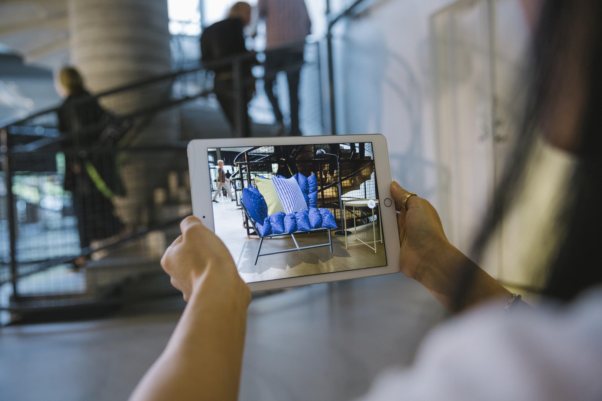
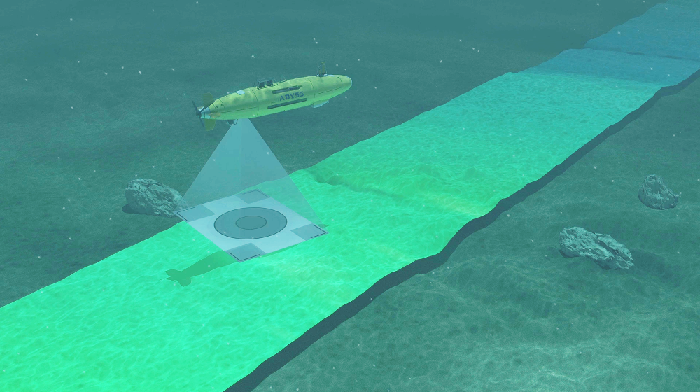
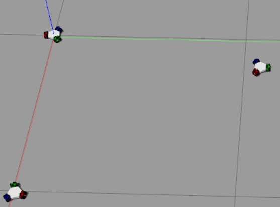
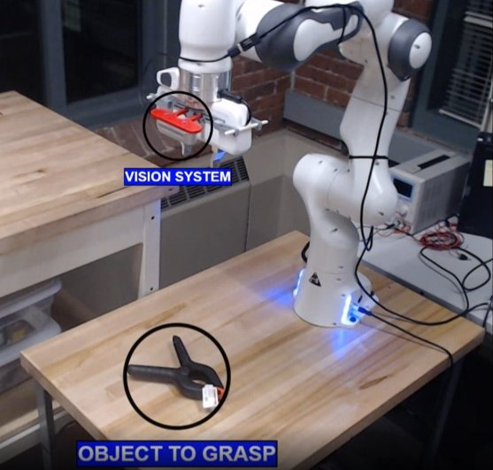

August 2022-Present
NeRF Augmented Reality, Machine Learning Final Project

I am currently working on a team to modify the Instant NeRF algorithm in order to scan environments and allow for the easy replacement,
placement, and /or removal of objects from a scan of the environment.
This can allow for easy use of augmented and virtual reality for applications ranging from enabling the integration of real world elements into a virtual world to allowing for virtual rearrangement of furniture.
August 2022-Present
Autonomous Underwater Vehicle Navigation, Robot Controls Final Project

I am currently working on a team to implement control algorithm for a Autonomous Underwater Vehicle.
This algorithm will allow for point to point navigation in a virtual environment even with unexpected conditions.
To achieve this we are using a pre-existing dynamic representation of an Autonomous Underwater Vehicle.
June 2022-August 2022
Dynamics of Biomimetic Robotic Self-Assemblages, Robot Dynamics Final Project

This project details the development of a modular robot for testing the dynamics of robotic self-assemblages
To achieve this we created a custom dynamic model of the robot for each individual robots
To test the dynamic model we created a Gazebo Simulation.
However, while we were successful in creating the dynamic model, we could not test the self-assemblages.
The Final Presentation
The Final Report
June 2022-August 2022
Ensemble Learning Methods for Robot Grasp Quality Estimation, Artificial Intelligence Final Project

This project details the development of an Ensemble network using the GR-CNND, GG-CNN-RGB, and GR-CNN grasping experts.
The network was trained on the Cornell image dataset.
The accuracy of the experts was raised from 70% to 85% by utilizing this ensemble.
The Final Presentation
March 2022-June 2022
Maze Mapping and Navigation
RBE 3002 Final Project
This project details the development of a ROS program with a team that used SLAM, AMCL, and A star to enable a Turtlebot 3 Burger to autonomously navigate, map, and localize itself inside a maze.
C-space, frontier detection, navigation, and frontier detection algorithms were made from scratch.
The nodes were programmed in Python, and the launch files were custom made.
The Final Report
January 2022-March 2022
Development of a Vision Controlled
3DOF Robotic Arm Pick and Place System
RBE 3001 Final Project
This project details the creation of a computer vision controlled robotic arm system.
An event driven state machine was coded using MATLAB on a Linux workstation.
Test trials resulted in the robot being able to detect and localize balls before sorting them by color.
The system was then able to perform dynamic object tracking and unique object manipulation.
The Final Report
October 2021-December 2021
Thus with a kiss I die
RBE 2002 Final Project
I worked with a team to create a final system implemented on three robots that covered: Romi, Tybalt/Juliet, and
Mercutio/Friar Lawrence (two robots played two characters).
The team’s system heavily utilized
the MQTT protocol for WiFi communication between the robots to coordinate cues and timing
for the scenes in Romeo and Juliet.
Using WiFi helped replace other communication methods like
using an IR emitter and receiver, which had multiple disadvantages, namely range and visibility.
The team was also able to utilize the AprilTag tracking with theOpenMV camera, which
allowed for the robots to consistently follow each other.
The code of the system was organized in
a way so each character had a “script” for the scene with the necessary tasks needed to complete.
All robots also shared a common program that covered general functions for all due to having the
same drive base.
The Final Report
August 2021-October 2021
Robotic Replacement of Solar Collector Panels
RBE 2001 Final Project
On a team I helped develop a robot mounted 4-bar mechanism to place panels on tilted surfaces at differing heights and locations by utilizing the Solidworks design suite.
Additionally we designed 2 different grippers and mounted them on 2 robots to complete the pick and place tasks.
The Final Project
July 2020-August 2020
Robotic Replacement of Solar Collector Panels
RBE 1001 Final Project
On a team I helped program a prebuilt robot to retrieve and deploy cups to and from platforms of varying heights and locations using C++ and multiple sensors.
This was done completely autonomously, however, there was the option of remote control.